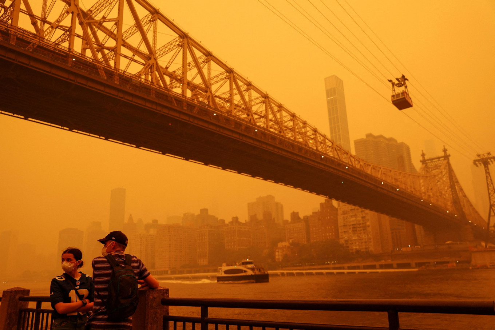
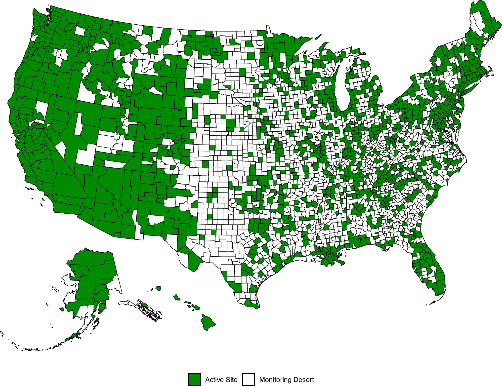

%%{init: {"theme": "base", "themeVariables": {"fontFamily": "Georgia", "fontSize": "16px", "lineColor": "#555555"}}}%%
flowchart LR
NM(["No Monitor"]) -->|"no data collected"| NV(["No Recorded Violation"])
NV -->|"problem looks absent"| NT(["No Regulatory Attention"])
NT -->|"no new sites funded"| NM
classDef start fill:#c0392b,color:#ffffff,stroke:#922b21,stroke-width:2px
classDef step fill:#fdebd0,color:#333333,stroke:#e67e22,stroke-width:1.5px
class NM start
class NV,NT step
NoteAbout this post
This post was my final project for EDS 242: Ethics and Bias in Environmental Data Science at UCSB’s Bren School. We were asked to pick a real-world case of data bias and explore its causes, impacts, and solutions. I chose air quality monitoring because the data shapes public health decisions for millions of people, yet few of us ever ask where it comes from or who it leaves out.
Introduction
In June 2023, Canadian wildfire smoke briefly gave New York City the world’s worst air quality.1 Millions of people checked an air quality index on their phones; however, few questioned the validity or asked where those numbers came from.

The Clean Air Act requires the EPA to set standards for six pollutants.1 Particulate matter, especially PM2.5, is among the most harmful. Its tiny particles are inhaled deep into the lungs, where they can contribute to respiratory and cardiovascular disease, reproductive and nervous system problems, and cancer.3
Knowing who breathes unsafe air depends on monitors. Yet Roque et al. found that 58.8% of U.S. counties, covering about 40% of the nation’s land, are air quality monitoring deserts with no active monitor.1 As Figure 2 shows, these gaps are not evenly distributed.

Case Study: Who Gets Counted?
Roque, Andrews, and Santos-Lozada, researchers at Pennsylvania State University, analyzed the EPA’s AirData directory as of September 2024.1 It lists 20,815 monitoring sites that have operated since 1957, of which only 4,821 are still active. The team labeled any county without an active site a monitoring desert. They then used logistic regression to link those labels to American Community Survey demographics and USDA rural–urban codes.
The pattern is clear. Nonmetropolitan counties had higher odds of being deserts, as did counties with higher poverty rates and larger shares of Black residents. After accounting for population size, counties with larger Hispanic populations also had higher odds, with deserts clustering in the Midwest and South. In the South alone, 66% of counties lack a monitor, many of them in the “Black Belt,” a historic and geopolitical region defined by its African American population. In total, about 50.7 million people, or 15.3% of the U.S. population, live in a monitoring desert.1
This reflects a broader urban vs. rural bias in environmental data, where urban areas tend to have higher-resolution data than rural areas.4 Roque et al. argue that monitor placement is not just a technical decision.1 Rather, it reflects social inequity because communities that often carry heavier pollution burdens are left unmeasured.
Source of bias
Monitors are, in effect, a sample of the nation’s air. When that sample is chosen unevenly, it creates sampling bias, a form of selection bias in which how data are collected makes some groups systematically different from others.5 A fair sample would give every community an equal chance of being measured.6
Monitor locations fail that test. Sites largely follow population size, in line with the Clean Air Act’s health-based primary standards, so rural and less-populated counties are systematically under-sampled.1 As Scott and Cutter note, the most obvious place for bias to enter an environmental analysis is data collection, or non-collection.7
A second bias follows downstream. Air quality estimates for desert counties, including those shown on phones, are borrowed from monitors elsewhere.1 Konno et al. call this substitution game bias, where an imprecise measure replaces the real measurement.5
Impact of bias
Because desert counties rely on distant monitors, an app may report clean air when local air is poor, or the reverse. This error carries into research. Studies linking pollution to respiratory disease, cognitive decline, and mortality depend on these estimates, so the health toll in unmonitored places may be larger than we think.1
Policy tools that use air quality to identify disadvantaged communities inherit the same blind spot. The people least visible in the data may be the least likely to receive help.
Reflection
Barrowman argues that data is never simply given; it is taken through human decisions about what to measure, where, and when.8 The air quality monitoring network is a clear example. Every white county in Figure 2 reflects decades of choices about whose air was worth measuring, and treating national air quality data as a neutral picture of the country hides those choices.
Scott and Cutter push this further with the modifiable areal unit problem, where results change depending on the geographic units used.7 The county-level measure in the case study is itself one of those choices. A single monitor in a large Western county can mark the whole county as covered, even if most residents live far away. The real gap may be larger than the desert map shows.
Banks et al.’s idea of historical relevance applies too.6 Data should reflect the population at the time of analysis, yet the median active monitor is 26 years old.1 Where people live, farm, and face pollution has shifted since many sites were placed.
The bigger risk is a feedback loop (Figure 3). No monitors means no recorded violations; no recorded violations means no regulatory attention, and no attention means no new monitors. Over time, a lack of data can look like the absence of a problem.
Figure 3 - The monitoring desert feedback loop (created by the author using Mermaid)
Solutions
Several strategies could reduce these biases:
Expand the network where data is thinnest. Instead of siting monitors mainly by population, agencies could use stratified sampling: group counties by rurality, region, and demographics, and ensure each group gets monitors.6 This approach transfers to other environmental networks with uneven coverage, such as water quality or biodiversity surveys.
Fill gaps with local and community data. Community science and local programs can add coverage where federal monitors are missing.1 These data rarely feed into EPA products, so connecting them is a practical first step. Low-cost sensors need calibration against regulatory monitors before they can be trusted, so they supplement the network rather than replace it.
Document coverage. Datasheets for datasets ask whether a sample represents the larger population, including its geographic coverage.9 A datasheet for AirData would make the network’s gaps visible to every researcher who uses it. Documentation adds no new monitors, though, so it works alongside expansion, not instead of it.
When identifying these biases in the environmental field, the common thread is simple. Before trusting what the data says, ask where and why it was never collected. When conducting a study, be prepared to reveal the gaps so the audience isn’t misled. Some gaps may not be fixable, but they should always be disclosed.
References
- Roque, N. A., Andrews, H., & Santos-Lozada, A. R. (2025). Identifying air quality monitoring deserts in the United States. Proceedings of the National Academy of Sciences, 122(17), e2425310122. https://doi.org/10.1073/pnas.2425310122
- The Jakarta Post. (2023, June 9). Canada wildfires shroud New York in apocalyptic haze. https://www.thejakartapost.com/paper/2023/06/09/canada-wildfires-shroud-new-york-in-apocalyptic-haze
- Manisalidis, I., Stavropoulou, E., Stavropoulos, A., & Bezirtzoglou, E. (2020). Environmental and health impacts of air pollution: A review. Frontiers in Public Health, 8, Article 14. https://doi.org/10.3389/fpubh.2020.00014
- Chakraborty, J. (2026). Unit 2: Data bias: Introduction and overview [Lecture slides]. EDS 242: Ethics and Bias in Environmental Data Science, Bren School of Environmental Science and Management, University of California, Santa Barbara. https://drive.google.com/file/d/1-96Q-t-bj6UYUr4S3KA-FI4dMMoU-Xlf/view?usp=sharing
- Konno, K., Gibbons, J., Lewis, R., & Pullin, A. S. (2024). Potential types of bias when estimating causal effects in environmental research and how to interpret them. Environmental Evidence, 13, Article 1. https://doi.org/10.1186/s13750-024-00324-7
- Banks, G. C., Tonidandel, S., Dou, W., Gerson, M. J., Xu, D., & Yavorsky, J. E. (2025). How to reduce bias in the life cycle of a data science project. Journal of Business and Psychology, 40, 1253–1273. https://doi.org/10.1007/s10869-025-10022-x
- Scott, M., & Cutter, S. L. (1998). GIS and environmental equity: An analysis of the assumptions. NCGIA Initiative 19: GIS and Society. http://www.geo.wvu.edu/i19/papers/scott.html
- Barrowman, N. (2018). Why data is never raw. The New Atlantis, 56, 129–135. https://www.thenewatlantis.com/publications/why-data-is-never-raw
- Gebru, T., Morgenstern, J., Vecchione, B., Vaughan, J. W., Wallach, H., Daumé, H., III, & Crawford, K. (2021). Datasheets for datasets. Communications of the ACM, 64(12), 86–92. https://doi.org/10.1145/3458723
Citation
BibTeX citation:
@online{mathews2026,
author = {Mathews, Ethan},
title = {Monitoring {Deserts:} {The} {Hidden} {Bias} in {U.S.} {Air}
{Quality} {Data}},
date = {2026-11-09},
url = {https://ethan-mathews24.github.io/},
langid = {en}
}
For attribution, please cite this work as:
Mathews, Ethan. 2026. “Monitoring Deserts: The Hidden Bias in U.S.
Air Quality Data.” November 9. https://ethan-mathews24.github.io/.